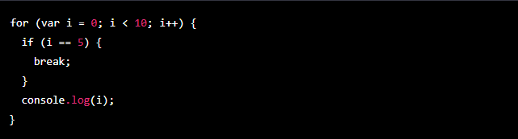

Temario de la clase:
- Ciclo FOR: Estatico y Dinamico
- Ciclo While
- Ciclo DO... WHILE
- Switch
Ciclo FOR: Estatico y Dinamico
Un ciclo FOR es una estructura de control en JavaScript que se utiliza para repetir un bloque de código un número determinado de veces. Hay dos tipos de ciclos FOR: estáticos y dinámicos. Vamos a ver cada uno de ellos en detalle.
Ciclo FOR estático:
Un ciclo FOR estático es aquel en el que el número de iteraciones es conocido de antemano y no cambia durante la ejecución del ciclo. Es decir, sabemos exactamente cuántas veces queremos que se ejecute el ciclo.
Ejemplo 1: La sintaxis de un ciclo FOR estático es la siguiente
La inicialización es una expresión que se ejecuta al principio de cada iteración del ciclo. Por lo general, se utiliza para inicializar una variable que se utilizará como contador.
La condición es una expresión que se evalúa en cada iteración. Si la condición se evalúa como verdadera, se ejecuta el código del ciclo. Si se evalúa como falsa, se sale del ciclo.
La actualización es una expresión que se ejecuta al final de cada iteración. Por lo general, se utiliza para modificar el contador.
Veamos un ejemplo de ciclo FOR estático:
En este ejemplo, el ciclo se ejecutará 10 veces, ya que la condición es "i < 10". En cada iteración, se imprimirá el valor de "i" en la consola y luego se aumentará en 1 gracias a la actualización "i++".
Ciclo FOR dinámico:
Un ciclo FOR dinámico es aquel en el que el número de iteraciones depende de los datos que estamos procesando. Es decir, no sabemos de antemano cuántas veces se ejecutará el ciclo.
Para utilizar un ciclo FOR dinámico, debemos proporcionar una lista de datos y utilizar una variable para recorrerla elemento por elemento. La sintaxis es similar a la de un ciclo FOR estático, pero la condición y la actualización son ligeramente diferentes:
La inicialización y la actualización son similares a las de un ciclo FOR estático. La diferencia principal está en la condición. En lugar de comprobar una condición fija, debemos comprobar si hemos llegado al final de la lista de datos.
Veamos un ejemplo de ciclo FOR dinámico:
En este ejemplo, el ciclo se ejecutará tantas veces como elementos tenga el array "datos". En cada iteración, se imprimirá el elemento correspondiente del array en la consola y luego se aumentará el contador "i" en 1 gracias a la actualización "i++".
Ciclo WHILE:
Un ciclo WHILE es una estructura de control en JavaScript que se utiliza para repetir un bloque de código mientras se cumpla una determinada condición. La sintaxis de un ciclo WHILE es la siguiente:
La condición es una expresión que se evalúa al principio de cada iteración. Si la condición se evalúa como verdadera, se ejecuta el código del ciclo. Si se evalúa como falsa, se sale del ciclo.
Veamos un ejemplo de ciclo WHILE:

En este ejemplo, el ciclo se ejecutará 10 veces, ya que la condición es "i < 10". En cada iteración, se imprimirá el valor de "i" en la consola y luego se aumentará en 1 gracias a la expresión "i++".
Un ciclo WHILE es útil cuando no sabemos de antemano cuántas veces queremos que se ejecute el código. Por ejemplo, podemos utilizar un ciclo WHILE para leer líneas de un archivo hasta que se encuentre una línea en blanco.
Ciclo DO...WHILE:
Un ciclo DO...WHILE es similar a un ciclo WHILE, pero con una diferencia importante: el código se ejecuta al menos una vez, independientemente de si se cumple la condición o no. La sintaxis de un ciclo DO...WHILE es la siguiente:
La condición se evalúa al final de cada iteración, por lo que el código se ejecuta al menos una vez antes de comprobar la condición. Si la condición se evalúa como verdadera, se vuelve a ejecutar el código del ciclo. Si se evalúa como falsa, se sale del ciclo.
Veamos un ejemplo de ciclo DO...WHILE:
En el ejemplo anterior, el ciclo se ejecutará 10 veces, ya que la condición es "i < 10". En cada iteración, se imprimirá el valor de "i" en la consola y luego se aumentará en 1 gracias a la expresión "i++".
Un ciclo DO...WHILE es útil cuando queremos asegurarnos de que el código se ejecute al menos una vez. Por ejemplo, podemos utilizar un ciclo DO...WHILE para pedir al usuario que ingrese un número válido hasta que lo haga.
En resumen, un ciclo WHILE se utiliza para repetir un bloque de código mientras se cumpla una determinada condición, mientras que un ciclo DO...WHILE se utiliza para repetir un bloque de código al menos una vez y luego continuar mientras se cumpla una determinada condición.
Switch
SWITCH es una estructura de control en JavaScript que se utiliza para evaluar una expresión y ejecutar un bloque de código en función del resultado de la evaluación. La sintaxis de una estructura SWITCH es la siguiente:
La expresión se evalúa y se compara con cada uno de los valores de los "case". Si se encuentra un valor que coincida con la expresión, se ejecuta el código correspondiente y se sale de la estructura SWITCH gracias a la sentencia "break". Si no se encuentra ningún valor que coincida, se ejecuta el código del "default".
Veamos un ejemplo de estructura SWITCH:
En este ejemplo, la expresión "dia" se evalúa y se compara con cada uno de los valores de los "case". Como "dia" es igual a "lunes", se ejecuta el código "console.log("Hoy es lunes");" y se sale de la estructura SWITCH.
Una estructura SWITCH es útil cuando queremos evaluar una expresión y ejecutar distintos bloques de código en función de los posibles resultados de la evaluación. Por ejemplo, podemos utilizar una estructura SWITCH para determinar qué acción tomar en función de una opción seleccionada por el usuario.
Sentencia BREAK:
La sentencia BREAK es una sentencia de control en JavaScript que se utiliza para salir de un ciclo o de una estructura SWITCH. Cuando se ejecuta la sentencia BREAK, el ciclo o la estructura se detienen inmediatamente y el control del programa pasa a la línea de código siguiente.
Veamos un ejemplo de cómo utilizar la sentencia BREAK en un ciclo:
En este ejemplo, el ciclo se ejecutará hasta que "i" sea igual a 5. En ese momento, se ejecutará la sentencia BREAK y el ciclo se detendrá. Como resultado, se imprimirán los números del 0 al 4 en la consola.
La sentencia BREAK es útil cuando queremos salir de un ciclo o de una estructura SWITCH de forma anticipada. Por ejemplo, podemos utilizar una sentencia BREAK para salir de un ciclo si encontramos el elemento que estamos buscando.
Sentencia CONTINUE:
La sentencia continue también se utiliza para interrumpir la ejecución de un bloque de código, pero en lugar de salir del bloque completamente, sólo salta a la siguiente iteración del ciclo en el que se encuentra. Esto es útil cuando queremos saltear una o varias iteraciones de un ciclo cuando se cumple una condición específica.
Veamos un ejemplo de cómo utilizar la sentencia CONTINUE en un ciclo:
En este ejemplo, la sentencia continue se encuentra dentro de un ciclo for, y se ejecuta cuando i es un número par. Esto hace que el ciclo saltée la iteración actual y continúe con la siguiente, por lo que sólo se imprimen los números impares del 1 al 9.
Es importante tener en cuenta que la sentencia continue sólo funciona dentro de ciclos, y no puede utilizarse dentro de un switch.